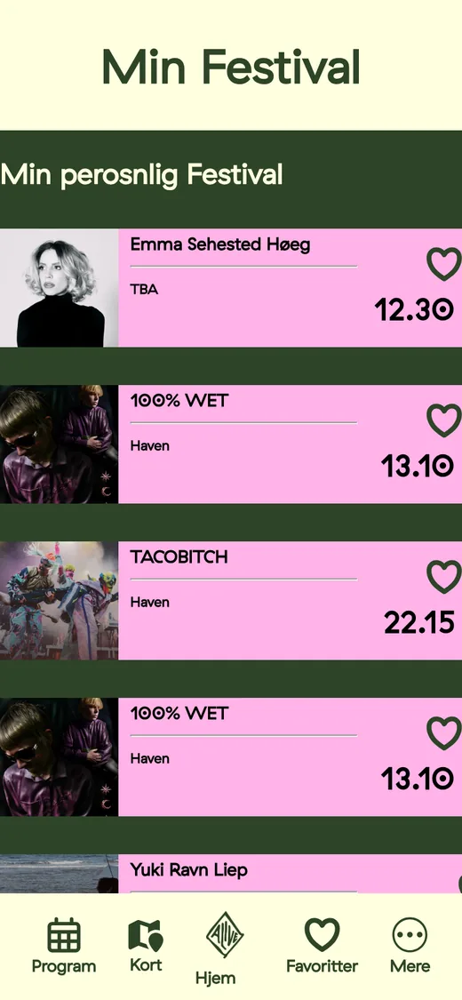

Hjørring Jiu-Jitsu
En ny hjemmeside til Hjørring Jiu-Jitsu Klub, bygget på interviews og think aloud tests og kodet i HTML og CSS.
Her kan du udforske de tre projekter, jeg har lavet på studiet, og se, hvordan de blev til, fra de første interviews til det færdige resultat. Alive Festival og Hjørring Jiu-Jitsu er gruppeprojekter, mens Lejb’øl er et solo-projekt om min families hobbybryggeri.
En mobile first webapp til festivalgæster med program, kort, billetter og favoritter. Vi var fire i gruppen og arbejdede med personas, wireframes, mockups, test og kode.



En ny hjemmeside til Hjørring Jiu-Jitsu Klub, bygget på interviews og think aloud tests og kodet i HTML og CSS.

Et designkoncept til min families hobbybryggeri, fra interview og struktur til wireframes og mockups.